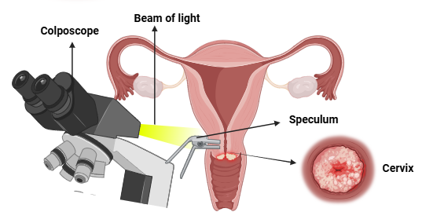

Colposcopy is a vital diagnostic procedure used to examine the cervix, vagina, and vulva for signs of abnormal or cancerous cells, particularly following abnormal results from cervical screening tests such as Pap smears or positive HPV tests. This procedure plays a crucial role in the early detection and management of cervical cancer.

Purpose of Colposcopy
Detection of Abnormalities:
Colposcopy is primarily performed to identify precancerous changes (cervical intraepithelial neoplasia, CIN) and invasive cervical cancer.Follow-Up:
It serves as a follow-up to abnormal Pap test results or high-risk HPV findings, allowing healthcare providers to evaluate the cervix more closely.Procedure Steps
Preparation:
Patients are advised to schedule the procedure when they are not menstruating and to avoid vaginal intercourse, douching, or inserting anything into the vagina for 24 hours prior to the exam.During the Procedure:
The patient lies on an examination table similar to a pelvic exam. A speculum is inserted into the vagina to hold it open, allowing access to the cervix. A colposcope, which is a lighted magnifying instrument, is positioned outside the vagina to provide a clear view of the cervix without touching it. A vinegar-like solution (acetic acid) is applied to the cervix to enhance visibility of abnormal cells.Biopsy:
If abnormal areas are detected, a biopsy may be performed. This involves taking small tissue samples from the cervix for laboratory analysis. There are two main types of biopsies:Exocervical Biopsy:
Tissue is taken from the outer part of the cervix.Endocervical Biopsy:
Tissue is taken from inside the cervical canal.Duration:
The entire colposcopy procedure typically lasts about 10 to 20 minutes. Source